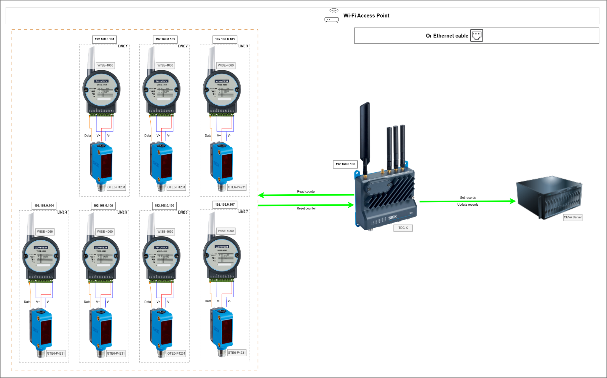

System architecture and integrated devices
Understand the overall system architecture, the role of each integrated device and the purpose of each web page.
System architecture
The Sensor Counting Edge Gateway runs on a SICK TDC-X and acts as the bridge between field devices and the business server.


Integrated devices
SICK TDC-X
The industrial edge gateway that hosts Node-RED, runs the business logic and exposes the web UI used by operators.
Advantech WISE-4060/WISE-4051
Wireless I/O module used as the field counter device. It receives sensor pulses and exposes the count to the gateway over Modbus TCP.
SICK GTE6-P4231 sensor
Photoelectric sensor that detects passing items and generates pulses for the WISE counter.
Wi-Fi access point / Ethernet network
Provides communication between the WISE devices, TDC-X and the server network.
Business server
Provides pending records and receives periodic update records from the gateway.
Web UI pages
| Page | Typical path | Main purpose |
|---|---|---|
| Operations | /dashboard/operations |
Main operational dashboard. |
| Recent update history | /dashboard/update-history |
Shows retained update attempts and supports CSV export. |
| System log | /dashboard/system-log |
Shows retained application logs and supports CSV export. |